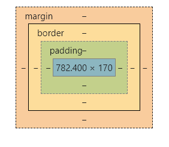
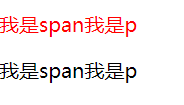
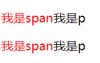

样式的书写位置
行内样式
xxxxxxxxxx11<span style="color: red;">内联样式</span>内嵌样式
用的最多，把需要用的css代码都集中放到style标签里面
xxxxxxxxxx61<style type="text/css">2 span{3 color: red;4 }5</style>6<span>内嵌样式</span>链接样式
如果css代码很多的话，可以单独打包到一个文件里面，然后这样导入，做到html和css的分离。
xxxxxxxxxx11<link rel="stylesheet" href="" type="text/css">导入样式
跟链接样式类似，可以导入外部的css代码，不过这个是写在style里面的。一共有6种写法。
xxxxxxxxxx91<style>2 @import 某某某;3 @import '';4 @import "";56 @import url();7 @import url('');8 @import url("");9</style>也就是说css不关心引号的写法，没有也可以。
基本样式
文字相关
文字颜色
xxxxxxxxxx11color: black;颜色请参考我的颜色对照表
文本对齐
xxxxxxxxxx11text-align:center;| 值 | 描述 |
|---|---|
| left | 把文本排列到左边。 |
| right | 把文本排列到右边。 |
| center | 把文本排列到中间。 |
| justify | 实现两端对齐文本效果。 |
| inherit | 规定应该从父元素继承 text-align 属性的值。 |
下划线
xxxxxxxxxx11text-decoration:none;| 值 | 描述 |
|---|---|
| none | 默认。定义标准的文本。 |
| underline | 定义文本下的一条线。 |
| overline | 定义文本上的一条线。 |
| line-through | 定义穿过文本下的一条线。 |
| blink | 定义闪烁的文本。 |
| inherit | 规定应该从父元素继承 text-decoration 属性的值。 |
行高
xxxxxxxxxx11line-height:20px;| 值 | 描述 |
|---|---|
| normal | 默认。设置合理的行间距。 |
| 某数字 | 设置数字，此数字会与当前的字体尺寸相乘来设置行间距。 |
| 某某px | 设置固定的行间距。 |
| % | 基于当前字体尺寸的百分比行间距。 |
| inherit | 规定应该从父元素继承 line-height 属性的值。 |
文字阴影
xxxxxxxxxx11text-shadow: 10px 5px 2px #FF0000;| 参数 | 描述 |
|---|---|
| 第一个参数 | 必需。阴影离文字的水平距离。允许负值。 |
| 第二个参数 | 必需。阴影离文字的垂直距离。允许负值。 |
| 第三个参数 | 可选。代表这个阴影有多模糊。 |
| 第四个参数 | 可选。阴影的颜色。 |
首行缩进
1em就是一个文字大小的空间
xxxxxxxxxx11text-indent: 2em;
背景相关
背景颜色
xxxxxxxxxx21background-color: gray;2background-color: #bfc;背景图片
xxxxxxxxxx11background-image:url("");背景图片重复
xxxxxxxxxx11background-repeat:no-repeat;| 值 | 描述 |
|---|---|
| repeat | 默认。背景图像将在垂直方向和水平方向重复。 |
| repeat-x | 背景图像将在水平方向重复。 |
| repeat-y | 背景图像将在垂直方向重复。 |
| no-repeat | 背景图像将仅显示一次。 |
| inherit | 规定应该从父元素继承 background-repeat 属性的设置。 |
背景开始的位置
设置background-attachment:fixed;才能兼容 Firefox 和 Opera 浏览器
xxxxxxxxxx21background-attachment:fixed;2background-position:center;| 值 | 描述 |
|---|---|
|
如果您仅规定了一个关键词，那么第二个值将是"center"。 默认值：0% 0%。 |
| x% y% |
第一个值是水平位置，第二个值是垂直位置。 左上角是 0% 0%。右下角是 100% 100%。 如果您仅规定了一个值，另一个值将是 50%。 |
| xpos ypos |
第一个值是水平位置，第二个值是垂直位置。 左上角是 0 0。单位是像素 (0px 0px) 或任何其他的 CSS 单位。 如果您仅规定了一个值，另一个值将是50%。 您可以混合使用 % 和 position 值。 |
尺寸相关
宽度
xxxxxxxxxx11width:100px;鼠标相关
一般搭配伪类使用
鼠标悬停样式
| 值 | 描述 |
|---|---|
| url | 想传送的url |
| default | 默认光标（通常是一个箭头） |
| auto | 默认。浏览器设置的光标。 |
| crosshair | 光标呈现为十字线。 |
| pointer | 光标呈现为指示链接的指针（一只手） |
| move | 此光标指示某对象可被移动。 |
| e-resize | 此光标指示矩形框的边缘可被向右（东）移动。 |
| ne-resize | 此光标指示矩形框的边缘可被向上及向右移动（北/东）。 |
| nw-resize | 此光标指示矩形框的边缘可被向上及向左移动（北/西）。 |
| n-resize | 此光标指示矩形框的边缘可被向上（北）移动。 |
| se-resize | 此光标指示矩形框的边缘可被向下及向右移动（南/东）。 |
| sw-resize | 此光标指示矩形框的边缘可被向下及向左移动（南/西）。 |
| s-resize | 此光标指示矩形框的边缘可被向下移动（南）。 |
| w-resize | 此光标指示矩形框的边缘可被向左移动（西）。 |
| text | 此光标指示文本。 |
| wait | 此光标指示程序正忙（通常是一只表或沙漏）。 |
| help | 此光标指示可用的帮助（通常是一个问号或一个气球）。 |
其他常用样式
透明
请设置在[0-1]之间
xxxxxxxxxx11opacity: 值;圆角
xxxxxxxxxx41/*默认全部角*/2border-radius: 25px;3/*分别设置*/4border-radius: 15px 50px 30px 5px:
盒模型
概述
盒模型相关的样式包括:
- 内外边距
- 边框
CSS认为,每一个文档的元素都是一个盒子,这个盒子包括自身的大小,边框大小,内边距和外边距.如下图:

如果在浏览器(以chrome为例)里面用开发者工具查看,可以发现,实际上内外边距,外边距还有边框都是占地方的,
xxxxxxxxxx71p{2 border: #ADFF2F 10px solid;3 padding: 20px;4 margin: 30px;5 width: 50px;6 height: 50px;7}

这些样式的区别就在于,内边距是算在元素本身的大小里面的,啥意思呢,就比如你元素宽20px,内边距你两边各加10px,那么你这个元素整体就宽40px.边框也是一样的,但是外边距不会算在元素里面.
边框
概述
一个元素有上下左右四个边框(废话),css允许分别定义各个方向上边框的样式.比如说
xxxxxxxxxx11border-color:red green blue pink;分别为上,右,下,左指定不同颜色.也就是从上开始,顺时针排列.
xxxxxxxxxx11border-color:red green blue;如果只写三个,那么第一个是上边框,第二个是左右边框,第三个是下边框.
xxxxxxxxxx11border-color:red green;只写两个的话就是上下边框,左右边框
xxxxxxxxxx11border-color:red;
一个的话肯定就是全部红喽;
这样分别指定样式的操作,在边框里面是通用的,也可以来指定宽度,表现等.如果不想这样隐式指定,也可以显示指定.
xxxxxxxxxx41border-top-width: 15px;2border-right-color: blue;3border-left-style: solid;4border-bottom-color: red;像这样子,直接指定也是可以的.
注意:!!!!!!!!!!!!!!只有把width,style和color都指定了之后才能正常显示边框,否则不会显示!!!!!!!!!!!!!!!!!!.
边框表现
xxxxxxxxxx11border-style:solid;| 值 | 描述 |
|---|---|
| none | 定义无边框。 |
| hidden | 与 "none" 相同。不过应用于表时除外，对于表，hidden 用于解决边框冲突。 |
| dotted | 定义点状边框。在大多数浏览器中呈现为实线。 |
| dashed | 定义虚线。在大多数浏览器中呈现为实线。 |
| solid | 定义实线。 |
| double | 定义双线。双线的宽度等于 border-width 的值。 |
| groove | 定义 3D 凹槽边框。其效果取决于 border-color 的值。 |
| ridge | 定义 3D 垄状边框。其效果取决于 border-color 的值。 |
| inset | 定义 3D inset 边框。其效果取决于 border-color 的值。 |
| outset | 定义 3D outset 边框。其效果取决于 border-color 的值。 |
| inherit | 规定应该从父元素继承边框样式。 |
边框宽度
xxxxxxxxxx11border-width:20px;| 值 | 描述 |
|---|---|
| thin | 定义细的边框。 |
| medium | 默认。定义中等的边框。 |
| thick | 定义粗的边框。 |
| 某某px | 自定义宽度 |
| inherit | 规定应该从父元素继承边框宽度。 |
边框颜色
xxxxxxxxxx11border-color:red green blue pink;跟字体颜色一样,详情参考颜色表.
简写
因为边框想要生效必须指定三个属性,写起来确实很麻烦,为了增加程序员的寿命,HTML支持边框的简写
xxxxxxxxxx11border:5px solid red;像这样,可以一次性设置三个属性.
选择器
基本选择器
*选择器
就是全选的意思,选中html文档中所有的元素.
xxxxxxxxxx41*{2 margin:0;3 padding:0;4}元素选择器
可以直接选择某一个标签,然后直接对HTML中所有这种标签进行批量编辑.
xxxxxxxxxx31p{2 color:red;3}这个就是让所有p标签内部文字颜色变为红色.
类选择器
可以批量选择自定义的类,用于某一类特定的标签.
html:
xxxxxxxxxx61<ul>2 <li class="item">java</li>3 <li class="item">c#</li>4 <li class="item">sql</li>5 <li class="item">css</li>6</ul>css:
xxxxxxxxxx51<style type="text/css">2 .item{3 color:blue4 }5</style>一般类选择器选择的都是某一类标签,在需要添加这个类的标签前面加上class,后面可以指定想要的类,类名可以随便起.在css里面用点类名的办法,选择所有该类.
一般来说,类选择器都是批量选择很多该类的标签,比如说ul的列表,li有很多很多条,为每一个li单独设计样式岂不是累死了,所以可以给他们起一个类名item,批量添加这些li的样式.
ID选择器
只能选择某一个特定的标签,一般只有一些特殊含义的标签才用起ID.还是刚才的例子.
html:
xxxxxxxxxx61<ul id="language-list">2 <li class="item">java</li>3 <li class="item">c#</li>4 <li class="item">sql</li>5 <li class="item">css</li>6</ul>css:
xxxxxxxxxx51<style type="text/css">2 #language-list{3 color:blue4 }5</style>ID选择器中,css用#加ID名就可以选中标签,一般一个网页里面这个语言列表可能就这么一个,所以比较特殊,可以用ID选择器来选中,直接操作这个标签.
组合选择器
包含选择器
选择所有div里面span元素
xxxxxxxxxx31div span{2 color:red;3}子选择器
选择div下的子元素
xxxxxxxxxx31div > span{2 color:red;3}相邻选择器
说是选相邻，其实也不是真正的相邻元素，它只能按照+前后的顺序排列的元素，也就是说#s1之后必须是#s2，顺序颠倒也不行。
xxxxxxxxxx141<head>2 <style>3 #s1 + #s2{4 color:red;5 }6 </style>7</head>8<body>9 <div>10 <span id="s1">s1</span>11 <span id="s2">s2</span>12 13 </div>14</body>兄弟选择器
相邻选择器选择的元素必须是相邻的同级元素，而兄弟选择器的要求就低一点了，只要是在#s1后定义的#s2就能被选中，中间可以不用相邻，隔着其他元素也可以。
xxxxxxxxxx141<head>2 <style>3 #s1 ~ #s2{4 color:red;5 }6 </style>7</head>8<body>9 <div>10 <span id="s1">s1</span>11 <span></span>12 <span id="s2">s2</span>13 </div>14</body>并集选择器
如果你想同时给多个不同元素设置样式,可以用并集选择器
xxxxxxxxxx11body, h2, p, table, th, td, pre, strong, em {color:gray;}像这样,彼此之间用逗号隔开,表示同时选中.
伪类选择器
名字虽然很酷,其实没那么复杂,这个玩意可以来操作一些特殊的类,比如超链接的样式,输入框聚焦后的样式等等.写法就是在需要添加的元素后面冒号,然后加入想加入的伪类即可.
动态伪类
锚点伪类
xxxxxxxxxx21a:link {color: #FF0000} /* 未被访问的超链接 */2a:visited {color: #00FF00} /* 已访问的链接 */行为伪类
xxxxxxxxxx31a:hover {color: #FF00FF} /* 鼠标移动到超链接上的时候 */2a:active {color: #0000FF} /* 鼠标点下去的一瞬间 */3input:focus{color: #bfbfbf;} /*获取到焦点后，一般用于文本框*/ 结构伪类
first-child
顾名思义,就是选择第一个子元素,但是这里面有很多坑,必须注意
先看html:
xxxxxxxxxx21<p><span>我是span</span>我是p</p>2<p><span>我是span</span>我是p</p>
- 选择所有p标签中,第一个p标签
xxxxxxxxxx31p:first-child{2 color: red;3} 
- 选择所有p标签内部第一个子元素
xxxxxxxxxx31p>:first-child {2 color: red;3}
before和after
可以用这两个伪类,在某个元素前面或后面插入文本.用content来控制文本内容.
xxxxxxxxxx81p:before2{3 content:"我是before加的";4}5p:after6{7 content:"我是after加的";8}状态伪类
这个是用来选择表单元素的。
- enabled
选中所有可用的表单元素
xxxxxxxxxx131<head>2 <style>3 input:enabled{4 color: #bfbfbf;5 } 6 </style>7</head>8<body>9 <form action="">10 <input type="text">11 <input type="button" value="按钮">12 </form>13</body>此时将会把文本框和按钮都选中，因为默认情况下表单元素是enabled
- disabled
选中所有不可用的表单元素
xxxxxxxxxx131<head>2 <style>3 input:disabled{4 color: red;5 } 6 </style>7</head>8<body>9 <form action="">10 <input type="text">11 <input type="button" value="按钮" disabled>12 </form>13</body>
属性选择器
如果你想选择带某个属性的标签,可以用属性选择器.但是里面也有很多坑,需要注意.
- 指定某种属性
xxxxxxxxxx11a[href] {color:red;}这个例子就是选择所有有href属性的a标签.也可以同时指定多个属性:
- 指定同时具有多种属性
xxxxxxxxxx11a[href][title] {color:red;}这个就是选择同是有href和title属性的a标签
- 精确指定某个具体属性
xxxxxxxxxx11p[class="A B"] {color:red;}选择某个有具体属性的标签,注意这个要求严格等于,也就是说你的class也必须是"A B",多一个空格都不行.这时候我们就可以使用下面的写法了.
- 含有某种属性
xxxxxxxxxx11p[class~="A"] {color: red;}用这个~可以表示含有A的class,不用严格匹配.
属性选择器也支持三种正则语法:
- 包含某字符串的属性
xxxxxxxxxx11a[href*="dashepi.com"] {color: red;}选择a标签的超链接中包含"dashepi.com"这个字符串的所有a标签
- 以某字符串开头的属性
xxxxxxxxxx11a[href^="www."] {color: red;}选择href以"www."开头的a标签
- 以某字符串结尾的属性
xxxxxxxxxx11a[href$=".cn"] {color: red;}选择href以".cn"结尾的a标签
选择器优先级
选择器的权重
- 标签选择器：1
- 伪类选择器：1
- 类选择器：10
- 属性选择器：10
- ID选择器：100
- 其他选择器：0
!important
!important修饰的css代码具有最高的优先级
定位与浮动
浮动
外边距重叠
高度塌陷
最终解决代码
xxxxxxxxxx61.clearfix::before,2.clearfix::after{3 content: "";4 display: table;5 clear: both;6}
flex布局
传统的网页布局是靠 display 属性 + position属性 + float属性完成的，不仅难用，而且bug频出。后来W3C忽悠引出了flex布局，用于替代传统布局。
flex布局核心就在于属性的使用。
- flex-direction：决定元素排列方向
- flex-wrap：控制换行
- justify-content：横向对齐方式
- align-items：竖向对齐方式
- align-content：控制多轴下的对齐方式
注意，一旦使用了flex布局，子元素的float、clear和vertical-align属性将失效。
flex-direction
| 值 | 作用 |
|---|---|
| row | 主轴为水平方向，起点在左端。 |
| row-reverse | 主轴为水平方向，起点在右端。 |
| column | 主轴为垂直方向，起点在上沿。 |
| column-reverse | 主轴为垂直方向，起点在下沿。 |
子元素垂直水平居中
xxxxxxxxxx31display: flex;2align-items:center; 3justify-content:center;
动画
定义与使用
定义：
xxxxxxxxxx81@keyframes 名字{2 from{3 /* 开始的样式 */4 }5 to{6 /* 结束的样式 */7 }8}使用：
xxxxxxxxxx91#test{2 width: 200px;3 height: 200px;4 background-color: #ADFF2F;5 /* 调用的动画名称 */6 animation-name: 刚刚定义的名字;7 /* 执行动画的时间 */8 animation-duration: 150ms;9}动画序列
from to只能用于一个过程，一次执行完，如果想要分步执行，可以设置时间点，来设置每一个时间点的状态。
xxxxxxxxxx221@keyframes move {2 0% {3 transform: translate(0px, 0px);4 }56 25% {7 transform: translate(1000px, 0px);8 }910 50% {11 transform: translate(1000px, 500px);12 }1314 75% {15 transform: translate(0px, 500px);16 }1718 100% {19 transform: translate(0px, 0px);20 }21}22常用的属性
| 属性 | 描述 |
|---|---|
| @keyframes | 规定动画。 |
| animation | 所有动画属性的简写属性，除了 animation-play-state 属性。 |
| animation-name | 规定 @keyframes 动画的名称。 |
| animation-duration | 规定动画完成一个周期所花费的秒或毫秒。默认是 0。 |
| animation-timing-function | 规定动画的速度曲线。默认是 "ease"。 |
| animation-delay | 规定动画何时开始。默认是 0。 |
| animation-iteration-count | 规定动画被播放的次数。默认是 1。 |
| animation-direction | 规定动画是否在下一周期逆向地播放。默认是 "normal"。 |
| animation-play-state | 规定动画是否正在运行或暂停。默认是 "running"。 |
| animation-fill-mode | 规定对象动画时间之外的状态。 |
3D转换
坐标规定
- x轴：水平向右 ，x右边是正值，左边是负值
- y轴︰垂直向下 ，y下面是正值，上面是负值
- z轴︰垂直屏幕 ，往外面是正值，往里面是负值

3D位移
可以直接来创建某一方向的位移
xxxxxxxxxx31transform: translateX();2transform: translateY();3transform: translateZ();但是要注意，如果把这三行代码放在一起，后面的会覆盖上面的，所以如果想同时设置多个坐标，需要用其他方法。
xxxxxxxxxx11transform: translate3d(x,y,z);3D透视
就是指的近大远小，如果想要某一个元素拥有透视，需要给其父元素设置透视。
xxxxxxxxxx231<html>3 <head>4 <style>5 #out{6 perspective: 500px;7 }8 #in{9 width: 100px;10 height: 100px;11 background-color: #BC8F8F;12 transform: translate3d(0,0,60px);13 }14 </style>15 </head>16 <body>17 <div id="out">18 <div id="in">19 12320 </div>21 </div>22 </body>23</html>
实用技巧
设置长宽相等
(根据宽度设置高度)如果确定width:100%;则设置高度 height: 100vw;
(根据高度设置宽度)如果确定高度height:100%;则设置 width: 100vh;
(根据宽度设置高度)如果确定width:60%;则设置高度 height: 60vw;
(根据高度设置宽度)如果确定高度height:60%;则设置 width: 60vh;
xxxxxxxxxx21width: 20%;2height: 20vw;
设置标签水平垂直居中
xxxxxxxxxx101父元素{2 display: flex;3}45子元素{6 /*水平居中*/7 margin: 0 auto;8 /*垂直居中*/9 align-self: center;10}设置背景图片全屏
xxxxxxxxxx151position: fixed;2top: 0;3left: 0;4width: 100%;5height: 100%;6min-width: 1000px;7z-index: -10;8zoom: 1;9background-color: #fff;10background-repeat: no-repeat;11background-size: cover;12background-size: cover;13background-size: cover;14background-position: center 0;15background-image: url("~assets/img/background/001.png");实用动画
热点图
xxxxxxxxxx661<html>3 <head>4 <style>5 #test {6 width: 200px;7 height: 200px;8 background-color: black;9 opacity: 0.5;10 }11 @keyframes hotspot{12 0%{}13 70%{14 width: 40px;15 height: 40px;16 opacity: 1;17 }18 100%{19 width: 70px;20 height: 70px;21 opacity: 0;22 }23 }24 .hotspot{25 position: absolute;26 top: 100px;27 left: 100px;28 }29 .hotspot #dot{30 width: 8px;31 height: 8px;32 background-color: aqua;33 border-radius: 50%;34 }35 .hotspot [class^="wave"]{36 width: 8px;37 height: 8px;38 box-shadow: 0 0 12px aqua;39 40 position: absolute;41 top: 50%;42 left: 50%;43 transform: translate(-50%,-50%);44 border-radius: 50%;45 46 animation: hotspot 1.2s linear infinite;47 }48 .hotspot .wave2{49 animation-delay: 0.4s;50 }51 .hotspot .wave3{52 animation-delay: 0.8s;53 }54 </style>55 </head>56 <body>57 <div id="test">58 <div class="hotspot">59 <div id="dot"></div>60 <div class="wave1"></div>61 <div class="wave2"></div>62 <div class="wave3"></div>63 </div>64 </div>65 </body>66</html>使用逐帧动画
xxxxxxxxxx141@keyframes play{2 0%{3 background-position: 0,0;4 }5 100%{6 background-position: -图片长度,0;7 }8}9.anima{10 width: 200px;11 height: 100px;12 background: url(图片位置) no-repeat;13 animation: play 2s steps(有几张图) infinite;14}